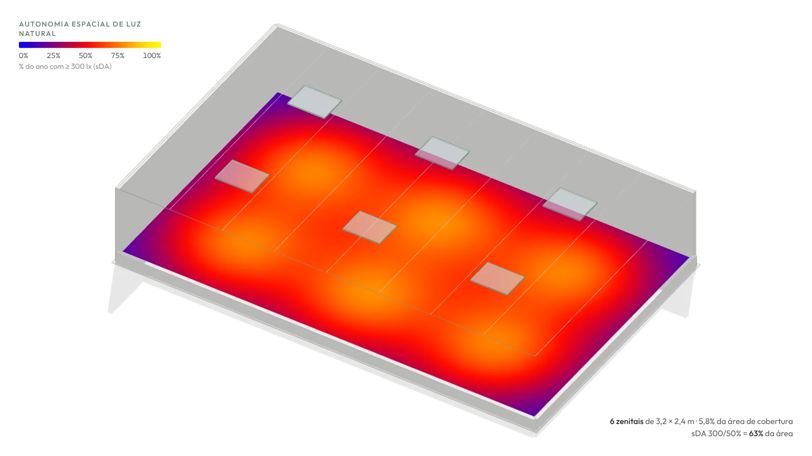
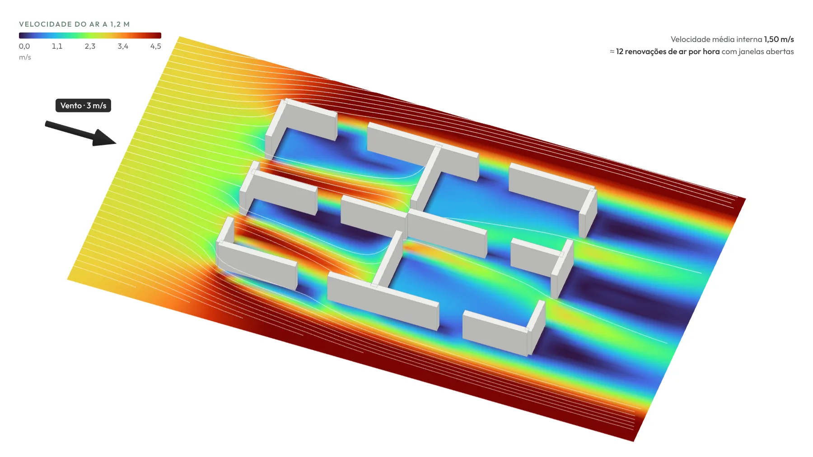
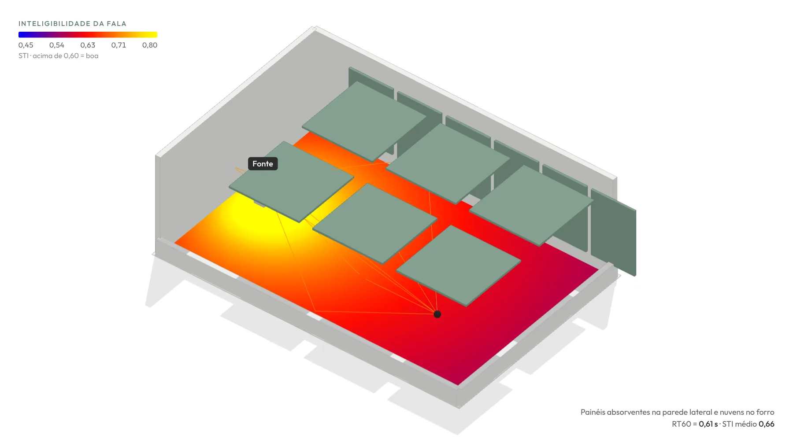
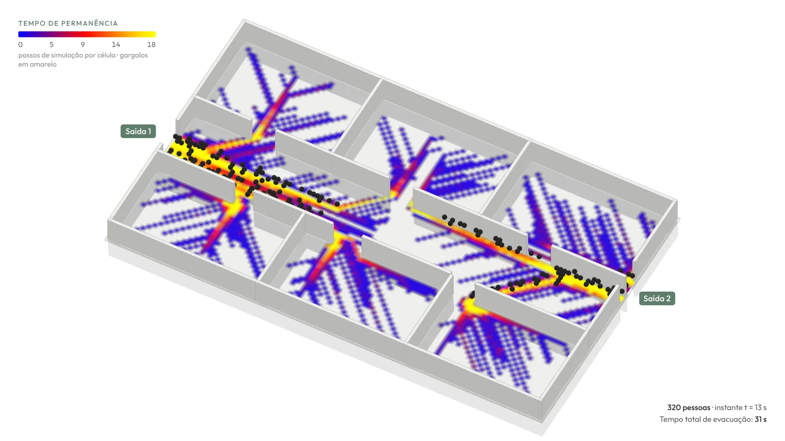
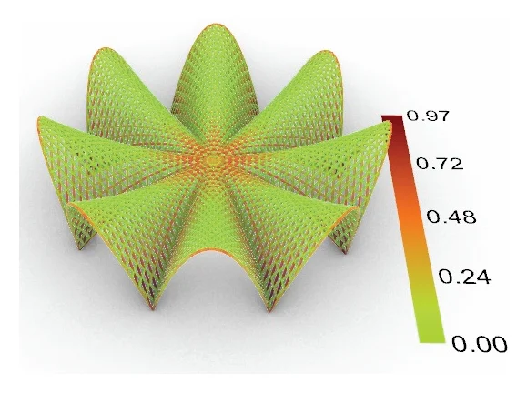

Simulação e otimização
Cada decisão medida antes da obra.
Simulamos sol, luz, energia, vento, água, som e fluxo de pessoas sobre o modelo do seu projeto e testamos milhares de variações para encontrar a que entrega mais com menos, com normas brasileiras como referência.
Seis frentes de trabalho.
Cada frente pode ser contratada sozinha ou combinada com as outras.
Radiação e fotovoltaico
Layout e quantidade de placas, fachadas fotovoltaicas e geração anual estimada.
Luz natural e ofuscamento
Aberturas, zenitais e brises dimensionados por desempenho (sDA, ASE, UDI, DGP).
Térmica e energia
Desempenho térmico e consumo para NBR 15575, PBE Edifica e certificações.
Vento e CFD
Ventilação natural, cargas de vento e conforto do pedestre no entorno.
Água e drenagem
Escoamento sobre coberturas, posição de ralos e dimensionamento de cisternas.
Pessoas, som e otimização
Acústica, visibilidade e evacuação, com otimização de um ou vários objetivos.
Exemplos.
Imagens produzidas pela BRD. As marcadas como Projeto BRD são de projetos reais; as marcadas como Em pesquisa vêm de trabalhos de pesquisa da equipe; as demais usam modelos ilustrativos.










Quer aplicar isso no seu projeto?
Mande o que você tem, mesmo que seja só uma ideia ou um arquivo de estudo. Respondemos com uma proposta de escopo.